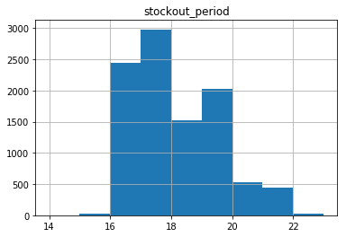

Firewood math and metrics¶
Firewood metrics and simulating firewood use
[1]:
import math
import numpy as np
import pandas as pd
import matplotlib.pyplot as plt
[2]:
%matplotlib inline
We inherited a large pile of firewood for a wood burning stove. We’ve never had a wood burning stove. People who actually know something about, or sell, firewood for such devices talk about cords and face cords of firewood. Time to learn something about firewood metrics.
Cords and face cords¶
A cord of firewood is about \(4 \text{ft} \times 4 \text{ft} \times 8 \text{ft}\), or \(128 \text{ft}^3\) in volume. Typically, a log for a wood burning stove is approximately \(16 \text{in}\). So, you can slice a full cord into three face cords, each being \(4 \text{ft} \times 1 \frac {1}{3} \text{ft} \times 8 \text{ft}\). Of course, that’s not all wood because there is a bunch of air in the stack. But, I’m not so interested in weight, I’m interested in number of logs and how long our stack of wood will last.
How much wood do we have?¶
It appears that when our stack of logs was full, it was two cords (~16 feet long).
Obviously, the number of logs in a face cord is dependent on the diameter of the logs. I did a rough count and got about 20 logs wide by 10 logs high for each face cord.
[41]:
pile_height_logs = 10
pile_width_logs = 20
logs_per_facecord = pile_height_logs * pile_width_logs
logs_per_cord = 3 * logs_per_facecord
print("Logs per face cord: {}".format(logs_per_facecord))
print("Logs per cord: {}".format(logs_per_cord))
Logs per face cord: 200
Logs per cord: 600
[6]:
num_facecords = 6
tot_logs = logs_per_facecord * num_facecords
print("Total logs in full pile: {}".format(tot_logs))
Total logs in full pile: 1200
We’ve used some wood - maybe about 75% of a face cord.
[7]:
num_facecords_used = 0.75
tot_logs_remaining = logs_per_facecord * (num_facecords - num_facecords_used)
print("Total logs left in partial pile: {}".format(int(tot_logs_remaining)))
Total logs left in partial pile: 1050
How much wood do we use?¶
On a winter day in which we keep the stove going from morning until night, we use approximately 12-14 logs.
[11]:
logs_per_day = 13
The largest source of uncertainty is the number of equivalent burning days (EBD) in which we use the stove. Some days we might just burn a few logs in the evening. Here’s an estimate of EBD by month:
[12]:
ebd_month_mean = [5, 10, 5, 5, 2, 1, 2, 1, 3, 5, 5, 10]
[13]:
logs_per_month_mean = [logs_per_day * ebd for ebd in ebd_month_mean]
print(logs_per_month_mean)
logs_per_year = sum(logs_per_month_mean)
print("Total logs burned per year: {}".format(logs_per_year))
[65, 130, 65, 65, 26, 13, 26, 13, 39, 65, 65, 130]
Total logs burned per year: 702
How long would a cord last?¶
[14]:
print("One cord lasts ~ {:.2f} years.".format(logs_per_cord / logs_per_year))
One cord lasts ~ 0.85 years.
[15]:
print("Two cords lasts ~ {:.2f} years.".format(2 * logs_per_cord / logs_per_year))
Two cords lasts ~ 1.71 years.
Simulating firewood use¶
The largest component of uncertainty is our monthly usage. Let’s assume that log usage can be approximated by a normal distribution with monthly means specified by logs_per_month_mean and monthly standard deviations equal to the square root of the means.
[16]:
logs_per_month_sd = [math.sqrt(mean) for mean in logs_per_month_mean]
Let’s have the simulation clock tick in months and we’ll simulate until we run out of logs. We’ll record the month in which that happens.
[17]:
def logsim(numlogs, logs_per_month_mean, logs_per_month_sd):
period = 0
month = period % 12
while numlogs > 0:
logs_used = round(np.random.normal(logs_per_month_mean[month], logs_per_month_sd[month]))
numlogs -= logs_used
period += 1
month = period % 12
return period
[20]:
nsim = 10000
sim = 0
stockout_period = []
num_logs_current = tot_logs_remaining
while sim < nsim:
so_prd = logsim(num_logs_current, logs_per_month_mean, logs_per_month_sd)
stockout_period.append(so_prd)
sim += 1
print(stockout_period[:100])
[18, 19, 19, 16, 17, 16, 16, 16, 17, 16, 19, 20, 20, 16, 20, 18, 16, 16, 18, 18, 19, 18, 19, 19, 18, 16, 21, 19, 16, 20, 19, 16, 16, 20, 16, 17, 21, 16, 16, 16, 20, 16, 19, 19, 16, 17, 19, 17, 19, 21, 19, 18, 19, 17, 16, 18, 19, 17, 19, 17, 19, 17, 19, 18, 19, 16, 19, 17, 19, 18, 21, 19, 16, 19, 16, 17, 16, 21, 17, 17, 19, 19, 18, 18, 19, 20, 16, 20, 19, 17, 19, 18, 17, 17, 16, 17, 17, 19, 17, 18]
Let’s compute summary stats and create a histogram.
[27]:
stockout_df = pd.DataFrame({'stockout_period': stockout_period})
stockout_stats = stockout_df.describe()
stockout_stats
[27]:
| stockout_period | |
|---|---|
| count | 10000.000000 |
| mean | 17.659300 |
| std | 1.426474 |
| min | 15.000000 |
| 25% | 17.000000 |
| 50% | 17.000000 |
| 75% | 19.000000 |
| max | 22.000000 |
[33]:
minbin = int(stockout_stats.loc['min'])-1
maxbin = int(stockout_stats.loc['max'])+1
bins = np.linspace(minbin, maxbin, maxbin - minbin + 1)
bins
[33]:
array([14., 15., 16., 17., 18., 19., 20., 21., 22., 23.])
[34]:
so_df.hist(bins=bins)
[34]:
array([[<matplotlib.axes._subplots.AxesSubplot object at 0x7fc4df3dcd30>]],
dtype=object)

[38]:
start_period = pd.Period('2019-01-01',freq='M')
median_stockout = start_period + int(stockout_stats.loc['50%'])
q1_stockout = start_period + int(stockout_stats.loc['25%'])
q3_stockout = start_period + int(stockout_stats.loc['75%'])
[40]:
print("The median stockout period is: {}".format(median_stockout))
print("The IQR for the stockout period is: {} - {}".format(q1_stockout, q3_stockout))
The median stockout period is: 2020-06
The IQR for the stockout period is: 2020-06 - 2020-08
Looks like the log pile will be gone in summer of 2020.
[ ]: